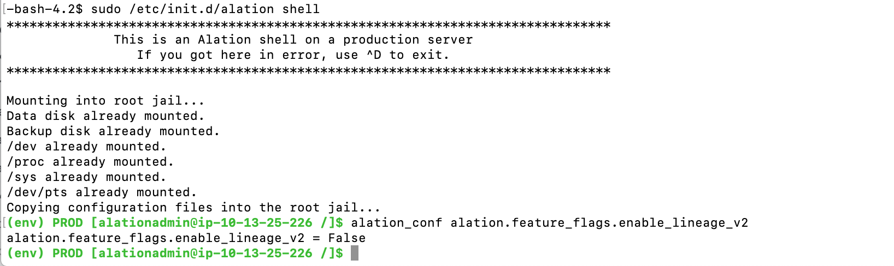

Update Alation to 2021.2¶
Customer Managed Applies to customer-managed instances of Alation
2021.2 Update Version Dependencies¶
Alation supports the update to version 2021.2 from the following previous versions:
2021.1.x
2020.4.x
Requires key rotation to have been performed on the Alation instance at least once
2020.3.x
Requires key rotation to have been performed on the Alation instance at least once
Requires that a Postgres reindexing script should be run on the Alation server before the update
Version V R7 (5.12.x) and Older Versions¶
From V R7 (5.12.x) and older versions, direct update to 2021.2 is not supported.
First, update Alation to a version that supports the update to 2021.2 (2020.3, 2020.4, or 2021.1) and then perform a second update to 2021.2.
2021.2 Release-Specific Information¶
Important
Additional actions are required if the updated Alation instance has to stay on Lineage V1 and/or Backup V1 after the update.
Backup V2 Becomes Enabled by Default¶
Backup V2 becomes the default backup tool from release 2021.2. The switch-over to V2 will happen automatically during the update to 2021.2. Backup V2 will also be the default backup tool on new installations of Alation from 2021.2 and onward.
What Does This Change Mean to Alation Admins?¶
If your Alation instance is already on Backup V2, this change does not affect your instance, and no action is required.
If your Alation instance is still on Backup V1 before the update to 2021.2, please take note of this change:
Alation recommends that you stay on Backup V2 after the update. You will be able to restore backups taken by the V1 tool after Backup V2 becomes enabled as the restore process is compatible with both V1 and V2. The next consecutive backup that runs on your system after the update to 2021.2 will be performed using the Backup V2 tool.
If your Alation server is on Backup V1 and using HA Pair configuration, then after the update, you will need to validate that both the Primary and Secondary instances have the desired backup configuration. This is covered in the instructions for updating HA Pairs.
Please also consider enabling additional Backup V2 features, such as incremental backups and backup alerts. More information: Backup V1 and Backup V2.
Check Current Backup Tool Version¶
Check the value of the alation_conf parameter alation.backup_v2.enabled. If it is in False, you are on Backup V1:
SSH to your Alation instance.
Enter the Alation shell:
sudo /etc/init.d/alation shell
To check the value:
alation_conf alation.backup_v2.enabled
Important
Do not attempt to change this parameter manually as it will result in an incomplete transition between backup tools and an inconsistent state of the system. To enable or disable backup V2, use the appropriate alation_action command described in Backup V2 documentation.
How to Stay on Backup V1 After Update to 2021.2¶
You can return to Backup V1 by disabling Backup V2 after the update to 2021.2 (not recommended). See the Backup V2 documentation on how to disable Backup V2.
Note that in a future release, Alation will announce an end of support for Backup V1, and V2 will become the only available backup tool.
Lineage V2 Becomes Enabled by Default¶
Lineage V2 becomes the default Lineage framework on new installations of Alation and after the update to 2021.2. During the update, the Lineage V2 feature flag will be set to True.
Check Current Lineage Version¶
To check which Lineage framework is currently in use on your Alation server:
SSH to your Alation host and enter the Alation shell:
sudo /etc/init.d/alation shell
Check the Lineage V2 feature flag. If it is set to
False, you are on Lineage V1. If it is set toTrue, you are on Lineage V2:alation_conf alation.feature_flags.enable_lineage_v2
Complete the Switch to Lineage V2¶
Full migration to Lineage V2 on an existing Alation instance consists in 2 steps:
Enabling the Lineage V2 feature flag on the instance;
Migrating the existing Lineage data to the Lineage V2 framework.
The update to 2021.2 only enables the corresponding feature flag but does not perform the Lineage data migration.
If your Alation instance is on Lineage V1 before the update and you wish to stay on Lineage V2, complete the switch by performing data migration. On how to migrate your existing Lineage V1 data to the Lineage V2 framework, see Enabling Lineage V2.
How to Stay on Lineage V1¶
If your Alation instance is on Lineage V1 before the update to 2021.2 and you wish to still stay on Lineage V1 after the update, explicitly set the Lineage V2 flag to False before the update. This will create an override value in alation_conf that will not be changed during the update to 2021.2. This action must be done explicitly even though you find that the value is already set to False on your instance.
To set the value:
SSH to your Alation host and enter the Alation shell:
sudo /etc/init.d/alation shell
Explicitly set the Lineage V2 feature flag to
False:alation_conf alation.feature_flags.enable_lineage_v2 -s False
Restart Web:
alation_supervisor restart web:*
Built-in Driver Updates¶
A number of built-in drivers were updated to newer versions.
Data Source Type |
Driver Updated to Version |
|---|---|
Google BigQuery |
Simba 1.2.12.1015 |
Amazon Redshift |
JDBC42-1.2.43.1067 |
Snowflake |
3.12.16 |
Domains Are Enabled by Default¶
In 2021.2, the Domains feature becomes enabled by default, and the corresponding feature flag is removed from Admin Settings > Feature Configuration. Domains become visible in the Alation UI after at least one Domain is created.
OCF Connectors Can Be Included into Backup¶
Starting with 2021.2, OCF connectors will be included into the Alation backup if the .zip package with the connector is present at /opt/alation/site/site_data/ocf/connectors/.
Starting with 2021.2, when you install a new OCF connector using the command alation_ypireti install --path <path>, then during installation, Alation will also copy the .zip package with the OCF connector to the backup path /opt/alation/site/site_data/ocf/connectors/ where it can be accessed by the backup process.
If you installed OCF connectors in releases prior to 2021.2, the corresponding .zip packages will not be present at the backup path of /opt/alation/site/site_data/ocf/connectors/. To take advantage of this feature and include the OCF connector installation packages into the backup, you will need to update the installed connectors to their current version after updating Alation to 2021.2. This step is included into the list of post-update action items below for every supported upgrade path.
Do I Have OCF Installed on My Instance?¶
You can check what Docker containers are running on the Alation host: from ourside of the Alation shell, run:
sudo docker ps
Alation Connector Manager is called agent. OCF connectors have names that follow the pattern connector_id, for example, connector_6:

As an alternative, you can check Alation Connector Manager version. This command should be run from the Alation shell:
# to enter the Alation shell: sudo /etc/init.d/alation shell # to check Alation Connector Manager version: kratos --version
The command outputs the currently installed version of Alation Connector Manager:

{kind=link}
2021.2 Update Known Issue¶
If you have a password set on the internal PostgreSQL database (Rosemeta), the update to 2021.2 will result in an error:
Password for user alation: psql: fe_sendauth: no password supplied ERROR: Cannot upgrade alation
Update to 2021.2 requires that the password on the internal PostgreSQL database should be cleared for the time of the update. The password needs to be set again after the update is completed. On how to set the Postgres password, see Set Password for Internal Postgres Instances.
Backup Check¶
Before performing any update actions, ensure that you have the latest valid Alation backup and take and store a backup or a system image, if necessary.
Update 2021.1.x to 2021.2¶
STEP 1: Lineage V1¶
If your Alation instance is on Lineage V2, skip this step.
If your Alation instance is on Lineage V1 before the update to 2021.2 and you wish to stay on Lineage V1 after the update to 2021.2, make sure you explicitly set required flag. See How to stay on Lineage V1.
STEP 2: Run a Postgres Scan¶
This step is optional.
Note
If you have a password set on the internal PostgreSQL database, the Postgres scan will fail (a known issue). Skip this step.
Before updating Alation, it is recommended to scan the internal Postgres database for corrupted indexes. If the scan finds corrupted indexes, contact Alation Support to resolve the Postgres problems before updating Alation. On how to scan Postgres: How to Scan Postgres For Corrupted Indexes.
STEP 3: Update Alation to 2021.2¶
Proceed to update the Alation application using the appropriate update instructions:
Update on the HA Pair:
with splitting the HA cluster: Update HA Pair with Cluster Splitting
without splitting the cluster: Update HA Pair Configuration (4.7 and above)
STEP 4: Update Alation Analytics V2¶
Note
Perform this step only if Alation Analytics V2 is in use on your instance.
Release 2021.2 includes an updated version of Alation Analytics V2. Use the steps in Update Alation Analytics V2 to update Alation Analytics V2.
STEP 5: Update OCF Connectors¶
Perform this step only if OCF connectors are in use on your instance. See OCF Connectors Can Be Included into Backup about why you need to perform this step.
To update, run the alation_ypireti update command specifying the ID of the connector and pointing the path to the .zip file of the current version of the OCF connector on your Alation host. Because you are updating the connector to the same version, there will be no changes to any data in Alation and the command will place the .zip file into the backup path.
On how to run the update command for an OCF connector, see Update a Connector.
STEP 6: Migrate Lineage Data to Lineage V2¶
Perform this step only if your Alation instance was on Lineage V1 before the update and now you wish to complete the switch to Lineage V2. See Complete the Switch to Lineage V2 on how to fully switch to Lineage V2.
Update 2020.4 to 2021.2¶
STEP 1: Lineage V1¶
If your Alation instance is on Lineage V2, skip this step.
If your Alation instance is on Lineage V1 before the update to 2021.2 and you wish to stay on Lineage V1 after the update to 2021.2, make sure you explicitly set required flag. See How to stay on Lineage V1.
STEP 2: Perform Encryption Key Rotation¶
The update from 2020.4 to 2021.2 cannot be done if key rotation has never been performed on the Alation instance. The 2021.2 update command will stop with a key rotation required warning.
If you have not recently done so, perform the encryption key rotation on the Alation Server. On large installations, if key rotation has never been performed before, the initial key rotation may take several hours to complete.
Key Rotation on HA Pair¶
Key rotation should be done on the Primary server.
If you plan to update the HA Pair with splitting the cluster, perform key rotation on Primary before splitting the Pair.
After key rotation on the Primary is completed, allow some time for replication to happen between Primary and Secondary. The cluster should be in sync before you update or split and update.
On how to perform key rotation: Encryption Key Rotation
STEP 3: Take an Additional Backup¶
It is highly recommended to take an additional Alation backup after successfully performing key rotation. This backup is required if you have to restore using a 2021.2 build. You cannot restore data that did not have at least one key rotation.
STEP 4: Run a Postgres Scan¶
This step is optional.
Note
If you have a password set on the internal PostgreSQL database, the Postgres scan will fail (a known issue). Skip this step.
After the encryption key rotation and before updating Alation, it is recommended to scan the internal Postgres database for corrupted indexes. If the scan finds corrupted indexes in Postgres, contact Alation Support to resolve the Postgres problems before updating Alation.
On how to scan Postgres: How to Scan Postgres For Corrupted Indexes
STEP 5: Update Alation To 2021.2¶
Proceed to update the Alation application using the appropriate update instructions: - Manual Software Update for Standalone Systems - Update on the HA Pair:
with splitting the HA cluster: Update HA Pair with Cluster Splitting
without splitting the cluster: Update HA Pair Configuration (4.7 and above)
STEP 6: Perform Post-Update Steps¶
Perform this step only if using Alation Analytics V2:
Perform this step only if using OCF Framework. Update Alation Connector Manager:
Perform this step only if OCF Connectors are in use on your instance: update OCF Connectors.
See OCF Connectors Can Be Included into Backup about why you need to perform this step. To update, run the
alation_ypireti updatecommand specifying the ID of the connector and pointing the path to the .zip file of the current version of the OCF connector on your Alation server. Because you are updating the connector to the same version, there will be no changes to any data in Alation and the command will place the .zip file into the backup path. On how to run the update command for an OCF connector, see Update a Connector.Perform this step only if your Alation instance was on Lineage V1 before the update and now you wish to complete the switch to Lineage V2. See Complete the Switch to Lineage V2 on how to fully switch to Lineage V2.
Update 2020.3 To 2021.2¶
This update scenario skips release 2020.4.x which includes a number of major changes in the Alation application. The changes in 2020.4 cause a number of additional checks and steps in the process of updating Alation.
If you have chosen to skip the 2020.4.x release and update to 2021.2 from 2020.3, do the following before the upgrade:
Inform yourself on the changes in 2020.4:
Make a list of post-upgrade steps that may be relevant to your instance in the releases you skip (2020.3 and 2020.4). You will need to address those after the update as well:
Create an update schedule that accommodates for the required pre-update steps, such as Postgres re-indexing and encryption key rotation (see below) and the post-update steps relevant to your instance.
Make sure you have the latest valid Alation backup.
To update Alation from 2020.3 to 2021.2, follow the steps below:
STEP 1: Required Checks¶
Internal PostgreSQL upgrade to 9.6 is required¶
If Postgres is not 9.6, you need to first Upgrade Internal PostgreSQL Instances from 9.3 to 9.6.
Elasticsearch migration from 1.4 to 7.4 should be complete¶
To check the Elasticsearch version that is currently in use on your instance, from the Alation shell, run:
alation_conf elasticsearch.backend_mode
It should be set to 2. If you see a different value, you will not be able to update as Elasticsearch migration may not have happened. In this case, contact Alation Support to assist with the update.
Lineage V1 Check¶
If your Alation instance is on Lineage V2, skip this step.
If your Alation instance is on Lineage V1 before the update to 2021.2 and you wish to stay on Lineage V1 after the update to 2021.2, make sure you explicitly set required flag. See How to stay on Lineage V1.
STEP 2: Perform Encryption Key Rotation¶
Update to 2021.2 cannot be done if key rotation has never been performed on the instance. If you have not recently done so, perform the encryption key rotation on the Alation Server. On large instances, if key rotation has never been performed before, the initial key rotation may take up to a week to complete.
Key Rotation on HA Pair¶
Key rotation should be done on the Primary server.
If you plan to update the HA Pair with splitting the cluster, perform key rotation on Primary before splitting the Pair.
After key rotation on the Primary is completed, allow some time for replication to happen between Primary and Secondary. The cluster should be in sync before you update or split and update.
On how to perform key rotation: Encryption Key Rotation
STEP 3: Take an Additional Backup¶
It is recommended to take an additional Alation backup after successfully performing key rotation. This backup is required if you have to restore using a 2021.2 build. You cannot restore data that did not have at least one key rotation.
STEP 4: Run Pre-Upgrade Reindexing Script¶
Running of the reindexing script is required because of the changes in release 2020.4.
Note
On HA Pair, the reindexing script should be run on the Primary instance.
Copy and save the following script as
preupgrade_reindexing.pyto /opt/alation/alation/opt/alation/ on the Alation host (path outside the Alation shell): Pre-Update Reindexing Script for 2020.4Is it recommended to run the script in a Screen session. To start a Screen session:
screen -S reindex_db
From the Alation shell, change user to Alation:
sudo /etc/init.d/alation shell sudo su alation
Update the permissions on the
preupgrade_reindexing.pyscript so that it can be executed by useralation:cd /opt/alation/ sudo chown alation:alation preupgrade_reindexing.py chmod 755 preupgrade_reindexing.py
Run the script from /opt/alation/ (inside the Alation shell) with the command given below. This script stops all Alation services except Postgres. Do not start any of the services while the script is running as this can result in an inconsistent state of the data.
python preupgrade_reindexing.py
The script prints its output to the console and to /opt/alation/site/site_data/pre_upgrade_reindex_rosemeta_db.log (path inside the shell).
Warning
In case the script execution fails, do not proceed with the update. Contact Alation Support to troubleshoot and assist with the next steps.
The time required for reindexing to complete depends on the size of the internal database. During the update, Alation will run a second re-indexing. The update time will be increased by approximately this amount of time when the second reindexing runs automatically during the update.
After the reindexing script completes, proceed to step 5.
STEP 5: Update Alation To 2021.2¶
Update on the HA Pair:
with splitting the HA cluster: Update HA Pair with Cluster Splitting
without splitting the cluster: Update HA Pair Configuration (4.7 and above)
STEP 6: Perform Post-Update Steps¶
Do the post-update steps for release 2020.4 that are relevant to your Alation instance
Perform this step only if using Alation Analytics V2:
Perform this step only if using OCF Framework. Update Alation Connector Manager:
Perform this step only if OCF Connectors are in use on your instance: update OCF Connectors.
See OCF Connectors Can Be Included into Backup about why you need to perform this step. To update, run the
alation_ypireti updatecommand specifying the ID of the connector and pointing the path to the .zip file of the current version of the OCF connector on your Alation server. Because you are updating the connector to the same version, there will be no changes to any data in Alation and the command will place the .zip file into the backup path. On how to run the update command for an OCF connector, see Update a Connector.Perform this step only if your Alation instance was on Lineage V1 before the update and now you wish to complete the switch to Lineage V2. See Complete the Switch to Lineage V2 on how to fully switch to Lineage V2.